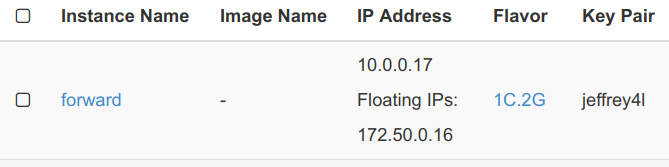

如果你的 OpenStack 环境中使用了 Ceph，而且开启了 Copy-on-Write Clone 功能。会发现如果 Glance 镜像启动了虚拟机，这个镜像是删除不掉的。包括 Boot from Volume 的镜像也会有类似的问题。但是用户会有这样的需求，既然删除不掉，我如何才能防止用户继续使用这个镜像。
这时，有一种方式是把公共镜像变为私有镜像。这样用户再建机器时，就看不到这个镜像了。但是这样会带来另外一个问题，已经启动虚拟机也会看不到镜像的信息。

这时还有更好的一个办法，Glance API 支持把镜像属性变为非可用状态。使用方法如下
$ openstack image set --deactivate <image>把镜像变成了非可用状态，此时用户就不能从这个镜像启动新的虚拟机了。
但是，用户还可以看到这个镜像的信息，已经启动的虚拟机不受影响。

如果想把镜像再变成可用状态，可以使用。
$ openstack image set --activate <image>现在这个功能只能通过 API 来使用，界面上还不支持。